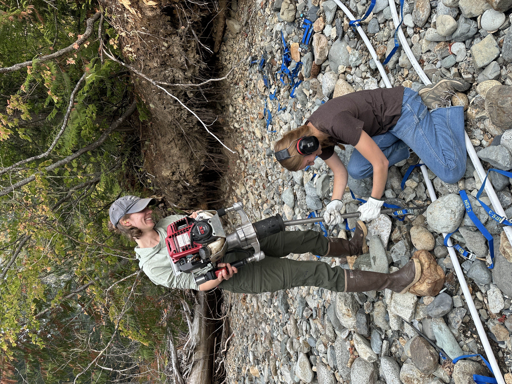
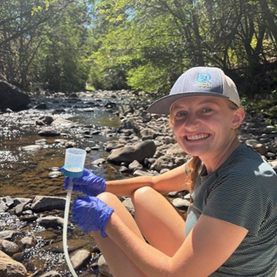
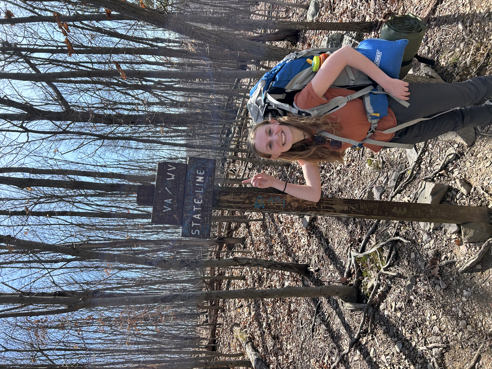

|
 |
Cle Elum Sockeye CollectionSpring operations underway Crew has completed netting opperations at Cle Elum Reservoir, where crews captured several thousand sockeye smolts. Tagging support is being led by partner agencies: USGS is conducting acoustic tagging, and the Yakama Nation is conducting PIT tagging. Together, these datasets will improve our understanding of fish movement, survival, and migration through "The Helix" a juvenile by-pass facility which is fully opperational for the first time this year. |
Winter Flood Impacts and RebuildRecovery and restoration The December 2025 flood events caused substantial damage to field infrastructure, including the loss of multiple PIT tag arrays and associated antenna systems. Since winter, staff have been evaluating damage, prioritizing replacement sites, and initiating phased rebuilds to restore monitoring coverage before peak seasonal fish movement. |
 |
 |
Winter Reporting and Partner SupportOff-season productivity During the winter period, the team advanced multiple reports and publications supporting ongoing monitoring, evaluation, and restoration efforts throughout the Yakima Basin. Staff also supported partner priorities in the field, including assistance with the Yakama Nation Satus Creek weir installation and Bureua of Reclamation staff with fish salvage. |
Welcome Dominic SinghNew seasonal technician Please join us in welcoming Dominic Singh, a 6-month technician who began with our team on April 6, 2026. Dominic brings several years of Yakima Basin field experience and most recently served as Head Field Technician for the Bull Trout Task Force. We are excited to have his expertise supporting this season’s projects. |
 |